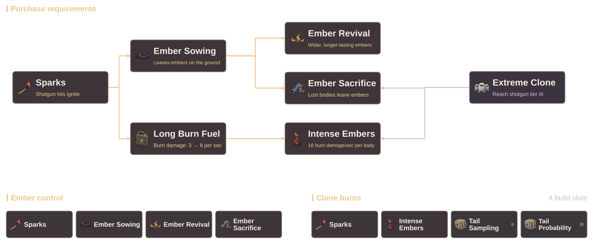
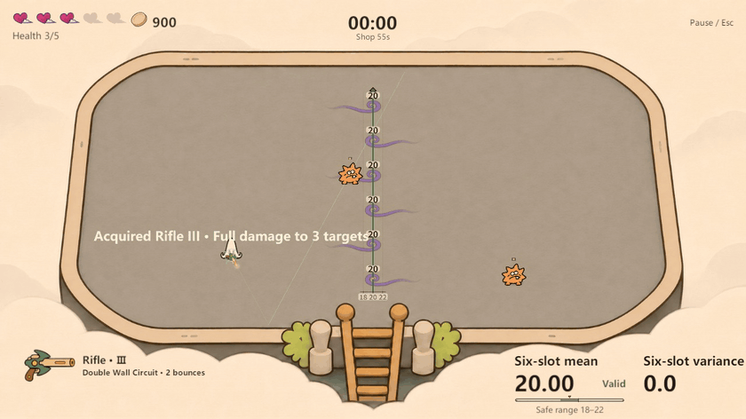
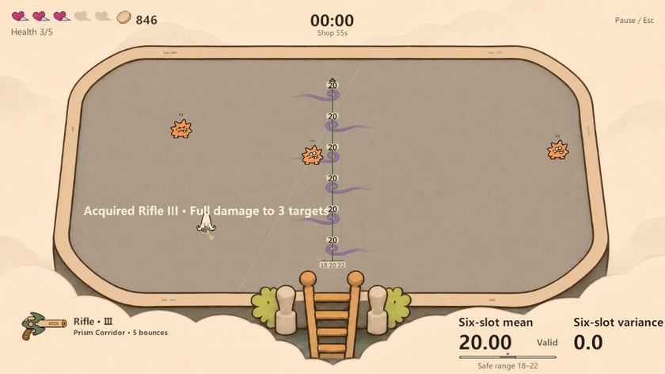
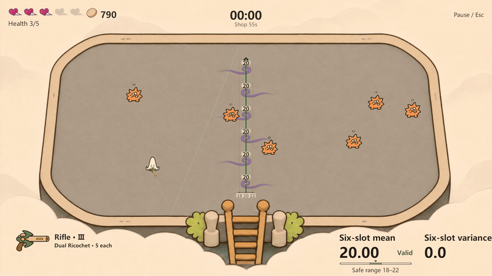
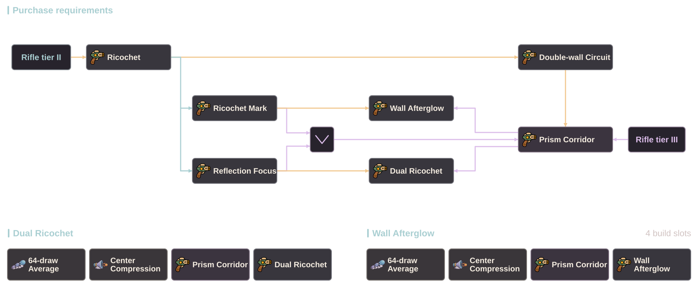

Build progression and card catalog
Ignition progression
-
Sparks

Shotgun hits ignite enemies. The burn continues if the mean drifts out of range.
-
Ember Sowing

Spent pellets and burning enemies leave embers that ignite the next pursuer.
-
Ember Revival

Wider, longer-lasting embers cover more of the horde’s path.
-
Extreme Clone

Calibration grows the clone army. Each clone can stack another burn on one target.

Ricochet progression
-
Ricochet

Shots bounce off one wall.
-
Double Wall Circuit

Shots can bounce twice.
-
Prism Corridor

Successive reflections carry one piercing shot farther across the arena.
-
Dual Ricochet or Wall Afterglow

Use the last slot for a second bolt or for slowing patches where bolts hit walls.

Card catalog
 All Upgrade Cards
All Upgrade Cards